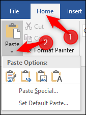
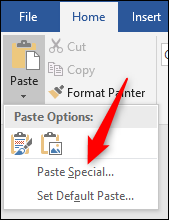
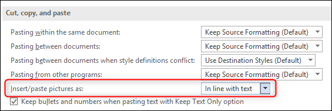
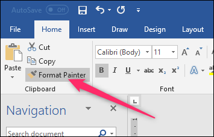

Cutting, copying, and pasting are three of the most basic features available to a computer user, but as you might expect Microsoft Word gives you more options than just those. There’s a built-in Office clipboard that’s pretty powerful, the ability to choose the format of content you paste, and more. Here’s how it all works.
When you paste text using Ctrl+V, Word defaults to pasting both the text and any formatting applied to that text. This means that the text will look like it did in the original location. Technically, Word copies the formatting marks in the text, which can be interpreted in different ways. This is why you might find that text copied from a website can appear much larger in Word; the formatting marks are interpreted differently by Word than they are by your web browser.
Instead of hitting Ctrl+V, you can click Home > Paste to see some different options.

The “Paste” drop-down menu shows a few options as icons across the top. From left to right these are:
There are also a couple of other options on the “Paste” drop-down menu. The “Paste Special” command lets you paste whatever you’ve copied as a special document type. For example, you could paste as a Word document, picture, or even HTML. The options available in the Paste Special window change depending on what you’ve copied. If you copied text, for example, you could insert it as a separate Word document. If you copied an image, you can change the format of the image when you paste (which we’ll talk more about in the next section).
The “Set Default Paste” option lets you change the default paste action (when you press Ctrl+V) if you don’t want “Keep Source Formatting” to be the default.
When you paste an image into Word, it gives you some flexibility on the format. Click Home > Paste > Paste Special (after copying an image) to see the options.

In this case, we’re pasting from the clipboard, so we can choose if we want the pasted image to be in PNG or BitMap format. If we were pasting an image file, we’d get the choice to embed it as a file or link to it instead (which lowers the size of the document).
You can also choose whether your pasted images default to “in line with text” or a different text wrapping by going to File > Options > Advanced > Insert/Paste Pictures As.

You’ve got your formatting set just so, and now you want various other parts of your document to look the same. It would be a pain to have to change each block of text to match manually, so Word provides the Format Painter tool to help. Format Painter copies the formatting from selected text and then pastes it into other text. If you select an entire paragraph, it copies the paragraph formatting. If you select just a few words of text, it copies any character formatting applied to that text.
Select the text with the formatting you want to copy, hit Home > Format Painter and then select the text to which you want to paste the formatting. If you want to paste formatting to multiple locations, select the text and then double-click the “Format Painter” button. Anything you click or select after that gets pasted with the original formatting, and you can click the “Format Painter” button again to turn it off.
